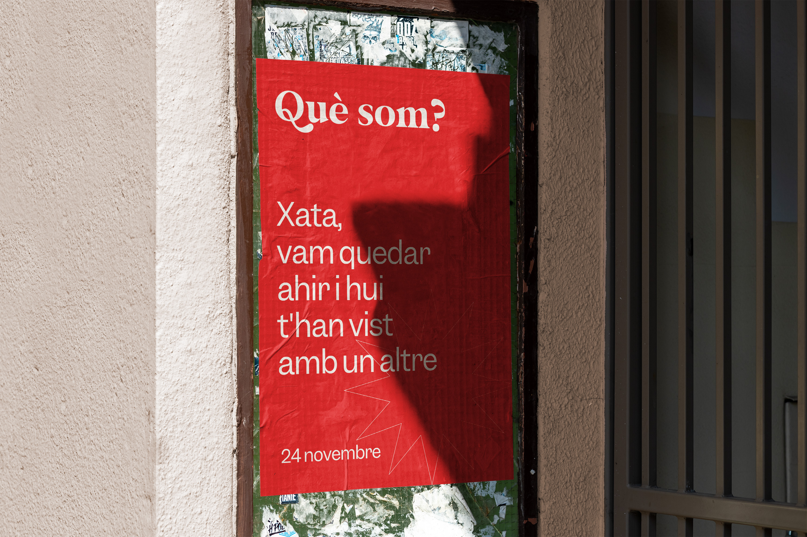

RETO: Acción de notoriedad que ayude a la marca Polo a posicionarse en el target de 16 - 35 años de la Comunitat Valenciana a través de la horchata, los fartons y lo que estos representan
INSIGHT: A los jóvenes nos da miedo el compromiso y no nos atrevemos a oficializar las relaciones. Todos hemos escuchado alguna vez eso de "¿Sois pareja o sólo amigos?". Casualmente, después de tantos años, hay quien sigue sin tener muy claro la relación entre la horchata y el fartón. ¿Juntos? ¿Separados? Hay hasta quien dice que con café están mejor...
